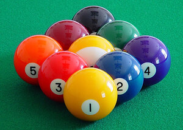
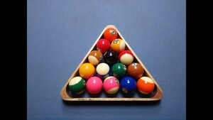
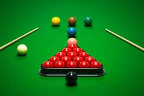

此種玩法只使用1到9號球，所以先把10到15號球拿掉。 將9號球組成一菱形陣，1號在前端，9號在中間，2號球置後，其餘無硬性規定擺放方式。 規則如下：
1、比球時，雙方選手須將母球觸及對側牆面反彈，最靠近選手方者率先取得開球權。
2、衝球時，母球需觸及1號球。
3、由小到大依序進攻。
4、母球洗袋、母球未觸及指定球或母球先觸及非指定球後再觸及指定球者，視為犯規，均為對方自由球。
5、以打入9號球者為勝。另帶一提，若打進9號球，母球亦隨之洗袋者，則將9號球置於發球區重開，並視同犯規，為乙方之自由球。
6、甲方倘若於同一局內"連續"犯規三次，該局則由乙方勝出。
7、9號球若於衝球時、因受指定球碰觸之故而入袋時(如緯來球評常說的：N9碰)均視為甲方勝出。
犯規打進的球不用撿起來，只有9號例外，要撿起來放在腿部。 一般的比賽通常是勝方開球或是輪流開球。 開完球後，在母球與號碼最小的球之間，經常會有其它子球阻礙路線，使母球無法直接打到目標球。所以為了降低運氣成分，開完球的第一竿可以做push out（「推桿」），要使用必須事先聲明，所謂push out是指，可以把母球推到任何一個位置，不受先碰到號碼最小的球這條規則限制，你想把球打進也可以（但是9號打進要撿起來），若母球落袋一樣算犯規，而對手可以選擇打或是不打。一般策略是將母球放到一個位置，摸的到目標球，但是無法直接進袋，若開完球之後，無法打到目標球，選手通常會作push out，然後雙方進入防守戰。 而有少數比賽爲了降低運氣成分，會取消開球進9號直接獲勝的規則，而是要求開球進9號必須撿起來。也有可能要求打擊9號時必須事先指定袋口。
8號球比賽開始時，子球放三角框裡，三角框的底部與腳顆星平行（球桌的短邊），前後的位置以最前端的球對應到腳點為準。排子球時，從球堆後端往前推向第一顆球，使得子球緊密相連。根據世界標準規則，8號球必須放在最中間的位置，而左下角和右下角的子球必須一球為大花、一球為小花（請見上圖）。母球可依選手要求擺放在開球區裡。
獲得開球權的選手先把球堆衝開，如果開球犯規（少於四顆球碰到顆星邊且沒有球進袋），對手可以要求重新開球且成為開球者，或是以目前的球況繼續比賽。如果開球後有進袋，開球方可以繼續出杆，球局仍然為「開放」的狀態（意指開球方還可自由選擇要打大花或小花）。如果開球方第二次出杆沒有球進袋，球局依然是「開放」，直到有子球落袋為止。
一方選手在出杆犯規或無球進袋之後，便停止出杆，換由另一方選手出杆，比賽依此方式進行。犯規之後，接著出杆的選手有自由球的機會將球擺在球桌上的任何位置。
開球後的第一桿，選手若將大花球打進，往後他只能將大花球打進袋，另一方選手則打小花球。一旦一方選手將他的子球都打進袋了，需再把8號球打進他指定的袋口才獲勝，若進錯袋或出杆犯規，則輸掉當局，否則其出杆權結束。
打進自己所有的子球後（大花或小花），在不違規的情況下，將8號球打進袋口就是勝方。
14.1是一種使用白色母球及15顆號碼球的花式撞球玩法。每次擊球前必須先指定子球號碼及袋口，成功該子球撞入該袋口，才能得分並繼續擊球，否則即換由對方擊球。開局前，15顆子球緊密排在球檯一側的三角框線裡，最前端的子球中心剛好落在腳點上。開球時若未得分，必須至少讓兩顆子球碰到台邊，否則就是犯規而扣分。
當檯面上的子球逐一入袋而僅剩一顆時，即完成一局。這時必須撿起袋中的14顆子球重新排在三角框線裡，除最前端腳點位置留空外，其餘各球仍緊密排列，形成所謂的局間開球。
14.1通常事先約定目標分數，打進一顆球得一分，先達成目標者為勝。正式比賽的目標通常設為100分，職業賽則為150分。14.1流行於美國、歐洲、菲律賓、日本和台灣等地區，在9號球和8號球興盛之前，是相當常見的撞球運動比賽項目。
此種玩法只使用1到10號球，所以先把11到15號球拿掉。10號球是由9號球發展出來的一種新興項目，玩法基本上與9號球類似，主要差異點如下：
1、排球時排成三角形，1號球在前端，10號球在三角形中間，其他球位置不限
2、擊球前必須先指定球、指定袋
3、打進10號球者獲勝
由於多了一顆球，開球時直接打進10號球機率很小，加上必須先指定球、指定袋，因此困難度比9號球競賽提高很多，是一種極具發展潛力的新興項目。
司諾克（Snooker）香港又名英式撞球，也是一種落袋式撞球，但因為具有悠久的歷史與獨特的地位，一般單獨歸成一類。標準的比賽球桌長12英尺，寬6英尺。用球包括1個白色母球，15個紅球和6個色球。撞擊紅球入袋得1分，色球入袋分數依次為黃（2）、綠（3）、棕（4）、藍（5）、粉紅（6）、黑（7）。
比賽開始前，15顆紅球緊密排列於三角框線區，黑球置於三角框線底腳點，粉紅球置於三角框線頂腳點，藍球置於中點，發球線黃球、棕球、綠球分別置於發球線右側、中間、左側。開球者可將白色母球置於半圓形發球區的任何位置，開球時應撞擊母球，令其撞開紅色球堆。初期進球順序為先進一顆紅球，再進一顆色球。紅球落袋不取回，色球落袋則取回並置於開球前的初始位置。當最後一顆紅球落袋並打完其後的一顆色球後，應以黃、綠、棕、藍、粉紅、黑的順序逐個擊球進袋且不取回，結束時以得分較高者為勝。
司諾克盛行於英國、愛爾蘭、加拿大、馬來西亞、澳洲和印度等大英國協國家以及香港，一度也曾流行於台灣。近十幾年來，司諾克運動也在東亞得到推廣和普及，目前泰國、中國等都有優秀選手湧現。